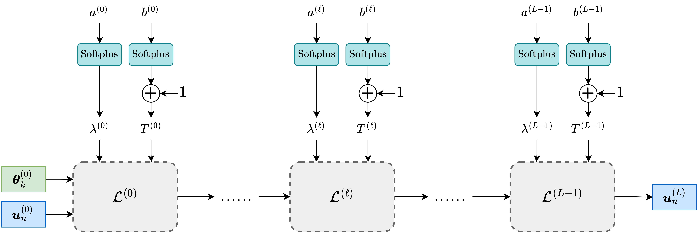

|
Long Zhou
I'm an incoming PhD student at the University of Trento, supervised by Prof. Elisa Ricci. I recently completed my M.Sc. in Computer Science and Engineering - Artificial Intelligence at Politecnico di Milano, Italy 🇮🇹, Previously I was a research intern at the Center for Visual Computing, Université Paris-Saclay - CentraleSupélec, working under Prof. Jean-Christophe Pesquet, and in close collaboration with Prof. Ismail Ben Ayed and Prof. Mounir Kaaniche working on few-shot learning. |

|
ResearchMy core research interests include: Few-Shot Learning, Vision-Language Models, Representation Learning, and Generative Models (e.g., VAEs, Diffusion). |
|

|
UNEM: UNrolled Generalized EM for Transductive Few-Shot Learning
Long Zhou, Fereshteh Shakeri, Aymen Sadraoui, Mounir Kaaniche, Jean-Christophe Pesquet, Ismail Ben Ayed, CVPR, 2025 project page / Arxiv We advocate and introduce the unrolling paradigm, also referred to as "learning to optimize", in the context of few-shot learning, thereby learning efficiently and effectively a set of optimized hyper-parameters |
|
Feel free to steal this website's source code. Do not scrape the HTML from this page itself, as it includes analytics tags that you do not want on your own website — use the github code instead. Also, consider using Leonid Keselman's Jekyll fork of this page. |